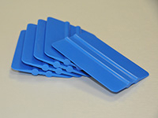
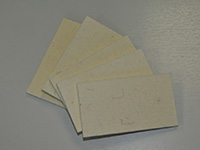
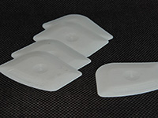
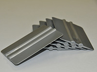
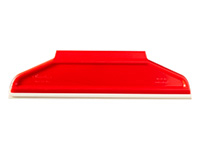

Инструменты, аксессуары
Инструменты для наклейки пленки (Ракеля)
- Ракель
-
Ракель – основной необходимый инструмент мастера при производстве работ по нанесении пленки на любую поверхность будь то автомобиль или рекламный щит. В работе могут использоваться ракели из пластика, нейлона, резины, войлока. Даже для нанесения узких полос пленки, когда казалось бы можно использовать просто подручные материалы лучше применить ракель, это позволит удалить излишки воздуха или воды из-под наносимого материала. Чаще всего применяют ракель в виде одно- или двухплоскостной пластины из негнущегося или слабогнущегося пластика шириной 10-12 см. Его рекомендуется применять на плоских поверхностях.
Важно! — если пластик мягкий или изношенный или на нем есть зазубрины, то на пленке после нанесения могут остаться пузырьки, царапины и морщинки. Лучший результат будет только при использовании качественного, подточенного в случае износа рабочей поверхности ракеля. Надо использовать разные ракели для работ по аппликации и для полной оклейки автомобиля пленками.
Работа ракелем:
Ракель рекомендуется держать под углом примерно 45 ° к поверхности контролировать степень нажима при работе.
Разглаживание лучше начинать от центра детали, затем короткими движениями в направлении к его краям. При нанесении больших кусков пленки следует не допускать соприкосновения пленки с поверхностью, потому что это ведет к образованию ненужных складок и морщин, которые в последующем удалить будет трудно. После нанесения пленки рекомендуется еще раз разгладить пленку с большим усилием (пересекающимися движениями). Для этого лучше использовать ракель, обернутый тканью, салфеткой или специальным чехлом, чтобы не получить царапин на пленке. Можно также применять тефлоновую ленту, или такую же пленку, это не только будет способствовать защите от повреждений, но и обеспечит хорошее скольжение при работе.
Требования к ракелю:
- Ракель должен быть не только новым, специализированным, но и правильно подготовленным!
- Нельзя пользоваться с шероховатым ракелем.
- Нельзя использовать один и тот же ракель для аппликации и для полной оклейки автомобиля.
- Если рабочая поверхность ракеля износилась, ее нужно подточить (подправить) на мелкой наждачной шкурке или заменить. Если под рукой нет шкурки ракель из пластика можно подправить если потереть его рабочую поверхность о канавку на другом ракеле.
- Сильно изношенным ракелем лучше не пользоваться вообще, его стоимость не соизмерима с трудозатратами по переклейке пленки.
- Пластиковый ракель легко может быть поврежден феном или агрессивными жидкостями. Поэтому существуют ракеля которые выдерживают высокую температуру.
- Ракель RC-4 Blue
-

Ракель RC-4 Blue
Ручные ракели для нанесения самоклеящейся пленки/графического изделия. Край с высокой гибкостью и хорошим скольжением. Идеально подходит для виниловых пленок, чувствительных к давлению. Предназначен для равномерного приклеивания пленки на различные поверхности и предотвращает образование воздушных пузырьков, неизбежно появляющихся в процессе монтажа. Износостойкий, плотный, но при этом эластичный и почти не царапающий поверхность пленок, является идеальным помощником сайнмейкера, работающего с виниловой аппликацией. Длина 10 см.
- Фетровый ракель
-

Фетровый ракель
Мягкий войлочный ракель. Предназначен для бережного и аккуратного нанесения самоклеящихся пленок. Особенно рекомендуется для металлизированных и литых пленок. Размер: 130 x 70 х 8 мм.
- Ракель 2 in 1 CH-A
-

Ракель 2 in 1 CH-A
Удобный инструмент для удаления и нанесение плёнки, прижимания углов при аппликации. Благодаря уникальному пластиковому составу он безопасен для поверхности, не царапает её, как это бывает с лезвиями.Одна сторона плоская, вторая со скошенными углами. Длина 7 см.
- Ракель RC - 4 Nylon silver
-

Ракель RC - 4 Nylon silver
Высококачественный экономичный ракель. Эта серия отличается низкой гибкостью и хорошим скольжением. Ракели этой серии идеальны для большинства пленок. Предназначен для равномерного приклеивания пленки на различные поверхности и предотвращает образование воздушных пузырьков. Износостойкий, плотный. Ширина 10 см.
- Резиновый ракель X-film
-

Резиновый ракель X-film
Удобный односторонний ракель с мягким резиновым краем. Обеспечивает аккуратное нанесение и плотное прилегание пленки.
Незаменим при нанесении винила на стекло влажным методом.
Размер: 207 х 55мм